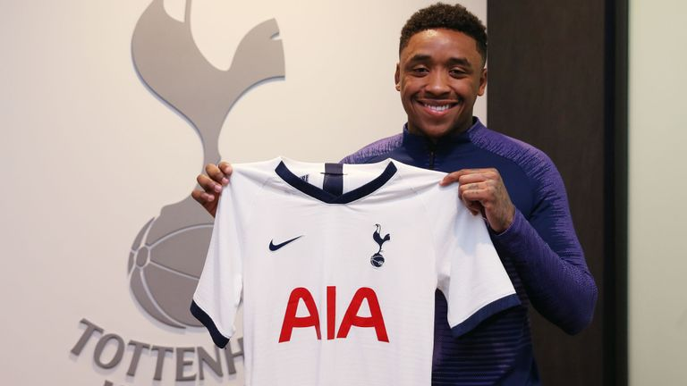
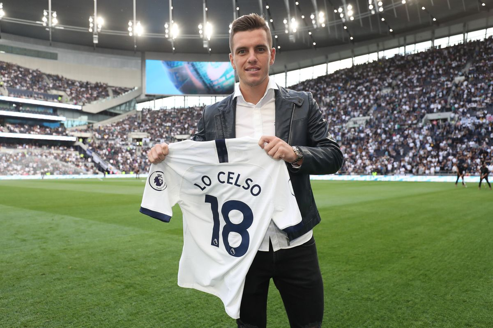
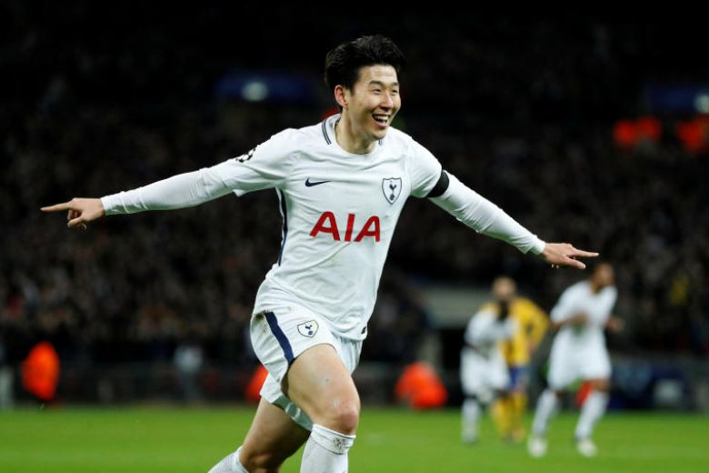

Latest News
Spurs sign Bergwijn
Tottenham Hotspur have today announced the signing of Steven Bergwijn from PSV Eindhoven. The 22 year old has 9 appearances for the Netherlands. Source: The Premier League
Tottenham Hotspur have today announced the signing of Steven Bergwijn from PSV Eindhoven. The 22 year old has 9 appearances for the Netherlands. Source: The Premier League
Tottenham have signed Argentine forward Giovani Lo Celso for a fee believed to be around 60 million pounds. He joins from Real Betis in Spain and would wear the number 18 shirt #HolaLoCelso  Source: The Guardian
Juventus Football Club have sent scouts to watch Tottenham forward Son Heung Min with a view of signing him permanently next summer for 300 million pounds.
 Source: Daily Mail| Club | MP | W | D | L | Points | MP = "Matches Played" W = "Wins" D="Draws" L = "Losses" | |
|---|---|---|---|---|---|---|---|
| 1. Man City | 38 | 32 | 2 | 4 | 98 | ||
| 2. Liverpool | 38 | 30 | 7 | 1 | 97 | ||
| 3. Chelsea | 38 | 21 | 9 | 8 | 72 | ||
| 4.Spurs | 38 | 23 | 2 | 13 | 71 | ||
| 5. Arsenal | 38 | 21 | 7 | 10 | 70 | ||
| 6. Man United | 38 | 19 | 9 | 10 | 66 | ||